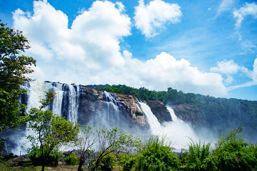
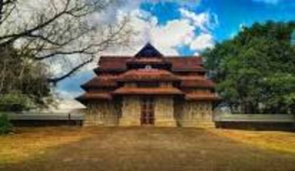

Tourist Attractions

Athirappilly Waterfalls
Located 60 km from Thrissur city, Athirapally Falls is a haven for flora and fauna alike. It is a popular picnic spot and the scenic beauty of the waterfall offers spectacular visuals for visitors.

Charpa Waterfalls
Charpa Falls is another one of the nature's delight that displays the blessings of Mother Nature. Cascading down from a shot height, this fall which is a part of River Chalakkudy offers a breathtaking experience. Athirappilly Falls and Lake Vachumaram are a stone's throw away from Charpa Falls.

Vadakkumnnathan Temple
With a collection of beautiful Mural paintings, some of which are more than 400 years old, this gigantic 1000 year old temple and historical structure is famous for the Nataraja Mural near the main gate.